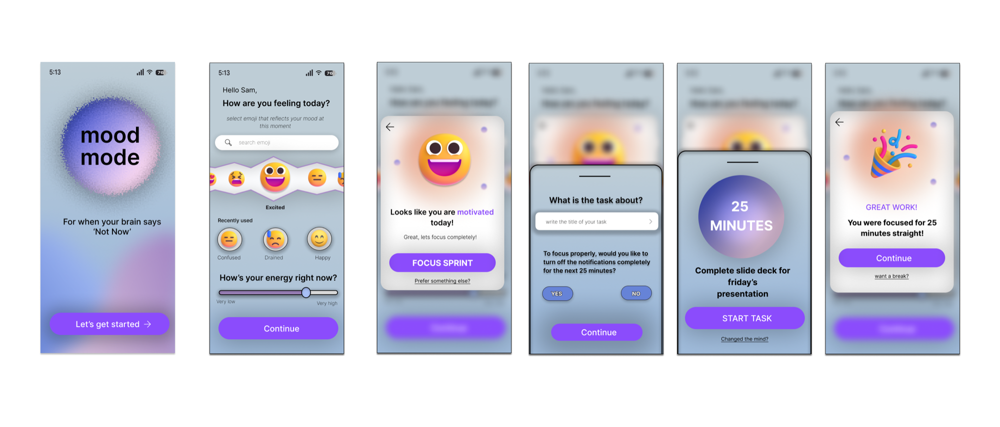
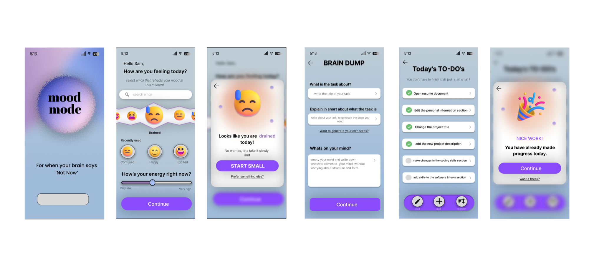
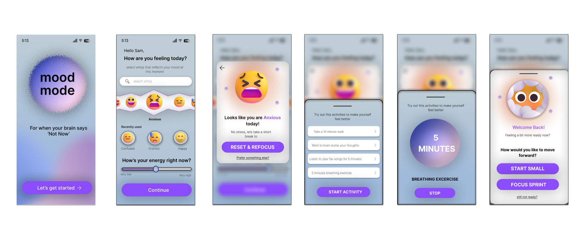

Chapter 01
Start with the right problem.
The gap
Every to-do app assumes you're ready to work.
Productivity tools hand you the same list whether you woke up energised or running on empty. For people with ADHD, the hardest part usually isn't knowing what to do — it's starting. A long list on a low-energy day doesn't motivate. It overwhelms.
Add what your research showed: who you spoke to, how many, and one quote that captures the "not now" feeling.
For when your brain says ‘Not Now’.
Lean UX hypothesis
If the first step matches how someone feels, they'll start sooner.
Instead of designing a better list, I framed the product around a single bet: check in on mood and energy first, then offer one path that fits that state — a focused sprint, a tiny first step, or a short reset.
Chapter 02
Make the thinking visible.
The check-in
Two questions. A few seconds.
The app opens with a mood picker and an energy slider — nothing else. Recently used moods sit one tap away, so checking in never feels like another task. That one answer decides everything that comes next.
Three moods, three paths
The same app behaves differently depending on how you arrive.
Feeling motivated
Focus Sprint
Name one task, mute notifications, and work in a single 25-minute block.
Feeling drained
Start Small
Brain-dump the task and let AI break it into steps small enough to begin.
Feeling anxious
Reset & Refocus
Take five minutes to reset first, then come back and choose how to continue.
Path 1 · Motivated
Protect the momentum.
When energy is high, the risk is distraction, not reluctance. The flow asks for one task, offers to turn off notifications for the next 25 minutes, and then shows only the timer. It ends with a celebration and an offer of a break, not another task.

Path 2 · Drained
Shrink the first step until it's easy to take.
On a low day, the app says “No worries, let's take it slowly.” A brain dump captures the task and anything else on your mind, and AI turns a short description into steps. The list reminds you: “You don't have to finish it all, just start small.” Completing even part of it counts as progress.

Path 3 · Anxious
Sometimes the next step isn't work.
Pushing an anxious user into a task usually backfires. This path offers short activities instead: a 10-minute walk, a brain dump, five minutes of music, or a guided breathing exercise. Afterwards the app asks whether you're ready, and lets you pick Start Small or Focus Sprint — or admit you're still not ready.

Principles that held it together
Three rules every screen follows.
Ask before you assign
Mood and energy come first. The app never shows work before it knows what you can handle.
Always offer a way out
“Prefer something else?”, “Changed your mind?”, “Want a break?”, “Still not ready?” — every suggestion can be declined without guilt.
Celebrate starting, not finishing
Rewards arrive after 25 focused minutes or a few small steps, not only when the list is empty.
Chapter 03
What changed. What comes next.
So far
3
Mood-matched modes, each with its own flow
4
Lean UX phases from hypothesis to prototype
40%
Faster task start — add how this was measured (who, how many, compared with what)
Next
From prototype to a working app.
I'm now building MoodMode with a real OpenAI integration so the Start Small steps are generated live from what people write. Add your next milestones, e.g. testing with ADHD users or the measures you'll track.
Designing for low energy meant taking decisions away, not adding features.